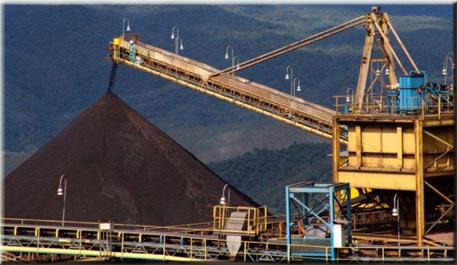
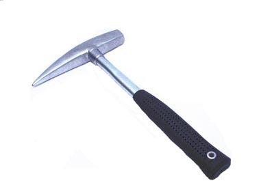
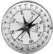
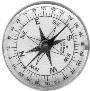

Engenheiro de Mina e Geologo
Mineração
DNPM - Departamento Nacional de Produção Mineral...
Projetos
Projetos de Engenharia de Minas...
Responsavel Técnico
Responsabilidade Técnica junto ao CREA...
Regularização Ambiental...
Paulo C Ferreira - 31 99260-3010
ATENDE ESTE SEGMENTO DE MERCADO POR MEIO DE:
Consultoria - Protocolos e Elaboração de Documentos; Junto ao Departamento Nacional de Produção Mineral; Profissionais Como Geólogo e engenheiro de minas; Despachante Para Protocolar Requerimentos Junto ao DNPM - Belo Horizonte - Minas Gerais
Principais Serviços
- Requerimento de pesquisa mineral (minério de ferro; ouro; etc.);
Requerimento de registro de licença (areia; argila; gnaisse; etc.);
Requerimento de registro de extração (cascalho; pedregulho; etc.);
Levantamento geológico pormenorizado da área a ser requerida;
Lavra experimental com emprego de Guia de utilização;
Relatório Anual de Lavra - RAL;
Análise geológica por sensoriamento remoto;
Elaboração de relatórios final e parcial de pesquisa;
Plano de Aproveitamento Econômico - PAE;
Meio Ambiente 
- Autorização Ambiental de Funcionamento - AAF/FEAM-SUPRAM.
Geologia  

- Reconhecimento geológico para pesquisa mineral;
- Avaliação de jazidas minerais;
- Representação gráfica da jazida através sensoriamento remoto